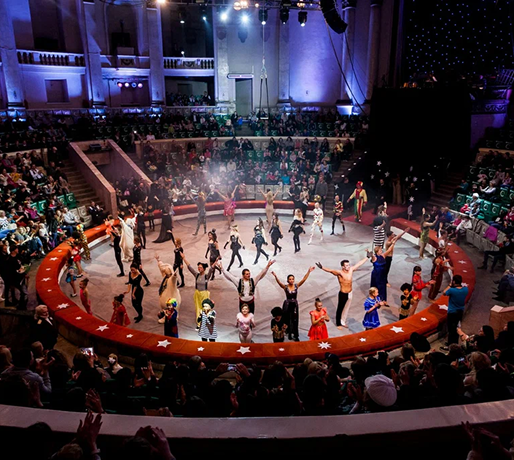

Чего мы там не видели?
Ростов — это город с богатой историей, уникальной архитектурой, вкусной кухней и атмосферой настоящего южного гостеприимства. Здесь переплетаются шум набережной Дона, уют тихих улочек и легенды степного края.
-
Набережная Дона
Это главная прогулочная зона города, названная в честь флотоводца Фёдора Ушакова. На набережной установлены скульптуры, включая "Рыбака", "Дон-Батюшку", и "Григория и Аксинью". Здесь находится уникальный светомузыкальный фонтан, предназначенный для купания в жару. Набережная также предлагает прогулки на теплоходах, панорамный вид на стадион "Ростов-Арена" и уютные зоны отдыха в тени каштанов и сакуры.
-
Тачанка "Ростовчанка"
Монумент символизирует казачество и революционное прошлое. Установленный в 1977 году, он представляет конную повозку с бойцами, ставшую узнаваемым символом гражданской войны и борьбы за свободу.
-
Большой цирк
Открытый в 1957 году, цирк славится своими программами, подходящими для всей семьи. Здесь царит атмосфера радости, а шоу радуют яркими эмоциями и профессионализмом артистов.